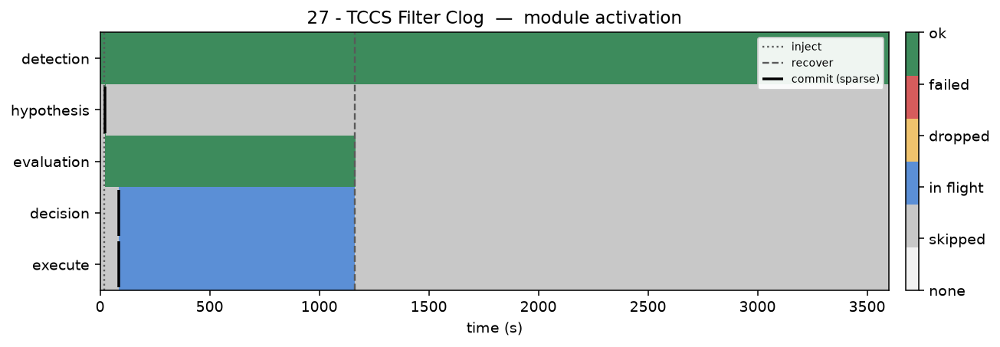
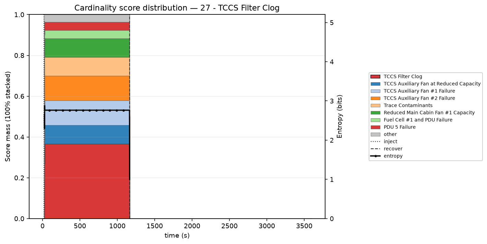

Module activation



| Hypothesis | P | T | P/T |
|---|---|---|---|
| 1. TCCS Filter Clog ★ ▸ | 0.366 | 18 | 0.0204 |
| 2. TCCS Auxiliary Fan #1 Failure | 0.121 | 20 | 0.0060 |
| 3. TCCS Auxiliary Fan #2 Failure | 0.121 | 20 | 0.0060 |
| 4. Reduced Main Cabin Fan #1 Capacity | 0.092 | 4 | 0.0229 |
| 5. TCCS Auxiliary Fan at Reduced Capacity | 0.092 | 4 | 0.0229 |
| 6. Trace Contaminants | 0.092 | 20 | 0.0046 |
| 7. PDU 5 Failure | 0.040 | 6 | 0.0067 |
| 8. Fuel Cell #1 and PDU Failure | 0.040 | 14 | 0.0029 |
| 9. PDU 4 Failure | 0.037 | 6 | 0.0061 |
| 10. Main Cabin Fan Failure | 0.000 | 3 | 0.0000 |
| 11. Emergency O2 System Maintenance | 0.000 | 8 | 0.0000 |
| 12. Fuel Cell Degrade | 0.000 | 8 | 0.0000 |
| 13. Fuel Cell Failure | 0.000 | 8 | 0.0000 |
| 14. CDRA LiOH Canister Saturation | 0.000 | 12 | 0.0000 |
| 15. Loss of Pressure | 0.000 | 12 | 0.0000 |
15 of 31 · ★ truth · ▸ attempted · highlight = first pick · P=0 if unscored at first decision
Sequence: TCCS Filter Clog
TTR: 19.1 min · attempts 1 · wrong 0